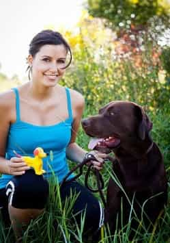

< < < Back
Life Lessons From A Dog – Return Of Kings
Back before I knew any better, I got myself into a serious long-term relationship with a dysfunctional girl who was so fucked up she probably deserves an article of her own. Among the many mistakes I made—apart from moving in with her, signing a lease, and co-mingling our assets and liabilities—was getting a dog with her.
Circumstances had it that I was (temporarily) neither in school or working, which meant I was sitting my ass home most of the day with a friendly and rambunctious Labrador Retriever puppy. With little else to do, the dog quickly became my full-time project. I became obsessed with behavioral training, reading as much as I could get my hands on, and testing it on my dog on a daily basis. We’d go on super-long walks in the middle of the day. We’d play endless games of fetch and chase-the-master. We’d waste away entire days carrying around tree branches, wandering around looking for trouble, and replenishing ourselves in public drinking fountains. The icing on the cake was this all happened in a lush, green suburban paradise. In retrospect, it was one of the most idyllic periods of my life.
It wasn’t long before me and that dog were communicating on a different level. When she’d act out, all I had to do was look at her a certain way and take a step in her direction to have her stop. She knew every possible command, understood never to tighten the slack on the leash, and would even not start eating—despite her bowl being on the floor—until I gave the go-ahead. I fed her the best food, brushed her coat regularly, and even brushed her teeth. Her prize-dog looks, friendliness, and impeccable training made her a hit with everyone she met. People loved my dog—and I did too.
Inevitably, among the people who would your-dog-is-so-cute-I-want-to-pet-her me were hot girls. These were girls who not only put the chick I was shacked up with to shame, but were also a cut above the hottest girls in my various social circles. The experience of talking to higher-quality girls in such an effortless way quickly demystified them to me, and gave me a valuable lesson that would come in handy sooner than I imagined. Unwittingly, my dog was teaching me things, but these lessons didn’t stop at dog training or the immense power of the wing-dog. These were life lessons. Nearly all of them came down to uncanny similarities between people and animals. Implementing these lessons permanently changed all of my social interactions, but especially my “romantic” ones.
The first thing you say doesn’t matter.
At first, girls approached me, but it didn’t take long for me to realize that I could instigate an opening myself. I’d let my dog sniff girls and then “apologize,” rambling on about how she’s friendly or was originally trained as “drug-sniffing dog” and was probably alerting me to something. If the girl was far away, like at the park, I’d let my dog off leash, give her a little tap on the side, and let her take care of some distance for us. It was only a matter of time before my conversations with girls went from dog-related banter to personal stuff.
We’re governed, first and foremost, by our instincts.
My dog was very intelligent for a dog. She could even open doors and undo safety locks. But, despite that, the most effective way to communicate with her was still good old-fashioned reward-and-punishment conditioning. Most people will tell you that humans are different, but any guy who’s been with a lot of girls will start nodding yes before you even finish saying that the same rules apply to women.
We like and seek out predictability.
Dogs are astute observers of patterns and routines. They quickly settle into habits—for better or worse—that are hard to break. They become uncomfortable or suspicious around sudden change or the unfamiliar. Girls are exactly the same. Short-circuiting this mechanism remains a key feature of my first-date game and, if you stop and think about it, probably yours too.
Like canines, the happiest women have structure and firm-hand leadership in their lives.
My dog was the happiest animal you’d ever meet. She was treated with affection and respect, so long as she extended the same. She was strictly prohibited from doing certain things, but that didn’t stop her from trying to get on the couch, chew on things, or tug on the leash. I corrected every one of those transgressions, lest they become habits. While she still periodically challenged my leadership, she came to accept a certain order and exchange. This made her into a delight to be around, to everyone she encountered.
Over time, I came to see the close correlation between effective dog management and effective leadership to such a degree, that—to this day—I automatically lose respect for a man with a poorly behaved dog. You can be sure he’s bad with women and children.

Ironically, the greatest service my dog ever rendered was convincing me to change my life. She introduced me to better-looking chicks, gave me vital foundational game, and—by demonstrating, through contrast, just how much worse my day became the moment my “girlfriend” came home—exposed the biggest problem in my life. While making the decision to break up with the girl, I also had the grave realization that—still jobless and with nothing but a friend’s couch to crash on in another part of the state—the dog would have to stay.
I never saw the girl or my dog again.
Read More: 8 Signs You Should Break Up With A Girl


{kind=link}
{kind=link}
{kind=link}